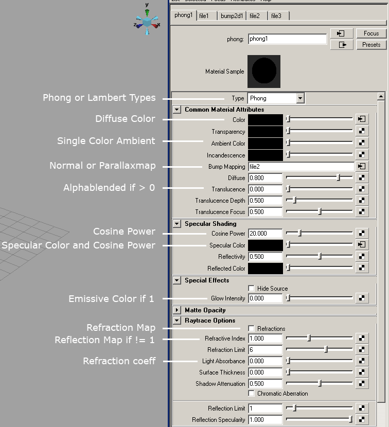

|
Printable Version |
I3D Exporter
Table of Contents
Autodesk Maya1 i3d exporter
To generate i3d files of your 3d-models you can use the exporter plugin for Autodesk Maya. The GIANTS Editor and the GIANTS Engine can only load i3d files. This section of the documentation will show you, how to export i3d files with the I3D exporter plugins in Autodesk Maya. The first thing you probably want to do is to install the exporter plugins in Autodesk Maya.
Installing I3D exporter plugin
Step 1Place the files I3DExportUI.mel, I3DExportValidate.mel and I3DExporter2008.mll into the folder "C:/Documents and Settings/<USERNAME>/My Documents/maya/scripts".
Step 2
Start Maya and open the Script Editor window.

Step 3
Select custom shelf tab
Step 4
Type the following commands in the lower portion of the Script Editor:
|
loadPlugin -qt "C:/Documents and Settings/<USERNAME>/My Documents/maya/scripts/I3DExporter2008.mll";
source I3DExportUI; source I3DExportValidate; I3DExport; |
Highlight the commands, then use the middle mouse button, to drag the highlighted MEL commands to the shelf.
Note:
- Maya don't like backslashes so replace them with slashes.
- Replace <USERNAME> with your username.
- The file path can be different depending on the language of your operating system (eg. C:/Dokumente und Einstellungen/<USERNAME>/Eigene Dateien/maya/scripts/I3DExporter2008.mll)
Step 5
Copy the I3D_icon.bmp into the folder "C:/Documents and Settings/<USERNAME>/My Documents/maya/2008/prefs/icons". Edit shelf to replace the default icon with the one enclosed.
Preparing your 3d-model for export
Before you can actually use the exporter, it’s wise to check certain things with your 3d-model in Maya which can cause issues later in the editor or the engine.In the Channel-Box you see the transformations of your selected object.

The ScaleX, ScaleY and ScaleZ of your object should be 1 1 1.
If you just plan to use this object as a static mesh or with no physics at all you could export it with any scale you want, but if you want to simulate your object in the engine (as a dynamic or kinematic rigid body object) the scale must be 1 1 1 otherwise the physics simulation will produce incorrect results.

If you have an object with scale, you can easily get rid of the scale. Go to the Modify-Panel, and select the option box right of the Freeze Transformations. The Freeze Transformations dialog window opens. You can select the checkbox scale and hit apply.
Note: Please refer to the artwork guide for further information about asset conditioning for the engine.
I3D exporter usage
Start the exporter dialog with a click on the I3D exporter icon you have created on your custom shelf (see Installing I3D exporter plugins)
Export Panel
The export panel is quite self-explanatory. In the export options part you can include and exclude parts from exporting (IK, Animation, Shapes, Nurbs Curves, Lights, Cameras, Particle Systems and/or Default Cameras). The Shape Export Subparts section allows you to control which subshape attributes are exported (Normals, vertex Colors, Texture Coordinates and/or Skin Weights).
The miscellaneous section has this options:
- Verbose, display verbose information in output window during the export
- Relative Paths, generate relative paths for texture files
- Float Epsilon, truncate values within epsilon range to zero. Epsilon: [-1e-5, 1e-5]
Buttons
- Preview, exports whole scene to a temporary file and starts the editor
- Export All, exports the whole scene
- Export, exports only currently selected objects
Attributes Panel
In the attributes panel you can load and save attributes of your objects those attributes will be saved into the Maya file and are translated into the correct i3d attributes when you export to a i3d file.

The first thing you have to do here is, that you must press the "Load Current" button at the bottom in order to load the attibutes of your object. Otherwise everything is unchecked and is not showing the attributes that are currently active on you object. So be sure, to hit this button first.
Current Node
Here you can see the name of your current working object.
Rigid Body
This section handles all the attributes regarding to physics rigid bodies.
Joint
Here you can define your joint-attributes in detail. One thing you might miss here are the joint limits, they must be defined within Maya, since your object can have many joints with different limits. You can define the limit of a joint angle by the limit informations of your transform-object.
Rendering
- Occlusion Culling, Objects that are entirely covered by other objects may be culled and thus not rendered at all. This option can increase the rendering performace in the engine if you have big objects containing much smaller objects, for instance a house. If you activate the occlusion culling on the root-node of the house all its childs are also not rendered, if the house is complete covered behind other objects. However, you should not apply this attribute on too many small objects because it is one more task for the engine.
- Non Renderable, With this option a objects will not be rendered at any time. Use this option for collision geometry. If you have complex objects with sub-objects attached, be careful with this checkbox since this attribute is also going to affect all the attached children.
- Clip Distance, This value defines how far the object is still going to be rendered. If you have a large scene and tons of objects this is a powerful method to keep your framerate high.
Validate Panel
With this panel you can validate if one of your objects have an incorrect pivot. In Maya your pivot can have a local and a world space attribute which you can find in the attribute editor on the right side. The x y and z values of both, local and world-space have to be 0 0 0 otherwise you will get a warning. You can fix incorrect pivots with the FreeezeToPivot option in the tools panel.
Tools
If you have validated your objects and a local pivot was not set to 0 0 0, you can quickly fix affected objects with the FreeezeToPivot button.
Known issues
| Issue | Solution |
|---|---|
| place2dTexture node information is ignored | Don't modify place2dTexture nodes and operate directly on the texture coordinates |
| Polygons with more than 4 sides and/or holes are ignored | Triangulate affected polygons (Modeling->Polygons->Triangulate) |
Material export options
Mapping between Maya and i3d material attributes
Autodesk 3ds MAX2 i3d exporter
Installing I3D exporter plugin
Copy the plugin file I3DExporter2008.dle or I3DExporter2009.dle into this directory:%3DSMAX installation path%/plugins/
On a Windows XP (english version) this would be this path:
C:\Program Files\Autodesk\3ds Max 2009\plugins
for example.
Blender i3d exporter
Installing I3D exporter plugin (Windows)
- Install Python Runtime 2.6
- Setup the environment variable PYTHONPATH to the python installation path. Also add DLLs and LIB directory.
Example: PYTHONPATH = C:\Python26;C:\Python26\DLLs;C:\Python26\Lib -
Copy blenderI3DExport.py to Blenders scripts directory.
(eg. C:\Documents and Settings\\Application Data\Blender Foundation\Blender\.blender\scripts)
Installing I3D exporter plugin (Linux)
You'll find a hidden directory called ".blender" in your home directory. Inside there's a sub-directory called "scripts", place the file blenderI3DExport.py there. Restart Blender.1 Autodesk Maya is a registered trademark of the Autodesk Corp.
2 Autodesk 3ds MAX is a registered trademark of the Autodesk Corp.
Latest Versions
 Newsletter
Newsletter
17 June 2009
GIANTS SDK v4.1.3
GIANTS Editor v4.1.4
GIANTS Script Debugger v4.1.3
Maya Exporter Plugins v4.1.2
MAX Exporter Plugins v4.1.2
Blender Exporter Plugins v4.1.2
30 March 2009
GIANTS Editor v4.1.2
Maya Exporter Plugins v4.1.2
3Ds MAX Exporter Plugins v4.1.2
Blender Exporter Plugins v4.1.2
Newsletter
Subscribe to our newsletter and keep yourself informed about updates and new releases of the GIANTS engine. Register here.